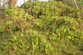
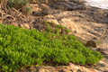
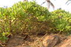
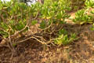
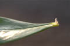
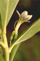
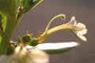

Common name : Fan flower, paper plant
Common name in Tamil : Vella muttagam
Common name in Singhalese : Takkada







Diagnostic characters
Botany & morphology
Ecology
Distribution
Erect shrubs. Leaves succulent. Flowers white; fruits fleshy with 1 - 2 seeds.
Leaves simple, alternate, sessile, obovate, apex rounded, base tapering, 15 - 20 cm long, entire or slightly repand - dentate, glabrous, rather thick but not fleshy, midrib stout.
Inflorescence axillary, dichotomously branched cymes.
Flowers white, bisexual, zygomorphic, pedicellate; calyx tube 5 – lobed; corolla 5 - lobed, split completely down on one side to expose curved style, petals often with violet stripes inside; stamens 5, free, alternate with corolla lobes, inserted at base of corolla; ovary 2 - celled, stigma truncate or divaricately 2 - lobed.
Fruit drupe, white, slightly lobed, 1 - 2 seeded.
Trunk woody below, stout, cylindrical, glabrous and shining, pale green.
In beach community on sand dunes, in well-drained areas.
Tropical E. Asia, Polynesia, and Australia. Throughout the shores of India. In Sri Lanka it occurs in the southwest parts.
Top of the page